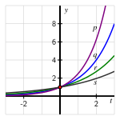
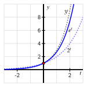
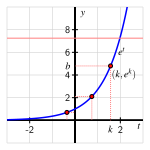

Why can every exponential function of form \(f(t) = b^t\) (where \(b \gt 0\) and \(b \ne 1\)) be thought of as a horizontal scaling of a single special exponential function?
What is the natural base \(e\) and what makes this number special?
We have observed that the behavior of functions of the form \(f(t) = b^t\) is very consistent, where the only major differences depend on whether \(b \lt 1\) or \(b \gt 1\text{.}\) Indeed, if we stipulate that \(b \gt 1\text{,}\) the graphs of functions with different bases \(b\) look nearly identical, as seen in the plots of \(p\text{,}\)\(q\text{,}\)\(r\text{,}\) and \(s\) in Figure 3.3.1.

Figure3.3.1.Plots of four different exponential functions of form \(b^t\) with \(b \gt 1\text{.}\)
Because the point \((0,1)\) lies on the graph of each of the four functions in Figure 3.3.1, the functions cannot be vertical scalings of one another. However, it is possible that the functions are horizontal scalings of one another. This leads us to a natural question: might it be possible to find a single exponential function with a special base, say \(e\text{,}\) for which every other exponential function \(f(t) = b^t\) can be expressed as a horizontal scaling of \(E(t) = e^t\text{?}\)
Preview Activity3.3.1.
Open a new Desmos worksheet and define the following functions: \(f(t) = 2^t\text{,}\)\(g(t) = 3^t\text{,}\)\(h(t) = (\frac{1}{3})^t\text{,}\) and \(p(t) = f(kt)\text{.}\) After you define \(p\text{,}\) accept the slider for \(k\text{,}\) and set the range of the slider to be \(-2 \le k \le 2\text{.}\)
By experimenting with the value of \(k\text{,}\) find a value of \(k\) so that the graph of \(p(t) = f(kt) = 2^{kt}\) appears to align with the graph of \(g(t) = 3^t\text{.}\) What is the value of \(k\text{?}\)
Similarly, experiment to find a value of \(k\) so that the graph of \(p(t) = f(kt) = 2^{kt}\) appears to align with the graph of \(h(t) = (\frac{1}{3})^t\text{.}\) What is the value of \(k\text{?}\)
For the value of \(k\) you determined in (a), compute \(2^k\text{.}\) What do you observe?
For the value of \(k\) you determined in (b), compute \(2^k\text{.}\) What do you observe?
Given any exponential function of the form \(b^t\text{,}\) do you think it’s possible to find a value of \(k\) to that \(p(t) = f(kt) = 2^{kt}\) is the same function as \(b^t\text{?}\) Why or why not?
Subsection3.3.1The natural base \(e\)
In Preview Activity 3.3.1, we found that it appears possible to find a value of \(k\) so that given any base \(b\text{,}\) we can write the function \(b^t\) as the horizontal scaling of \(2^t\) given by
It’s also apparent that there’s nothing particularly special about “\(2\)”: we could similarly write any function \(b^t\) as a horizontal scaling of \(3^t\) or \(4^t\text{,}\) albeit with a different scaling factor \(k\) for each. Thus, we might also ask: is there a best possible single base to use?
Through the central topic of the rate of change of a function, calculus helps us decide which base is best to use to represent all exponential functions. While we study average rate of change extensively in this course, in calculus there is more emphasis on the instantaneous rate of change. In that context, a natural question arises: is there a nonzero function that grows in such a way that its height is exactly how fast its height is increasing?
Amazingly, it turns out that the answer to this questions is “yes,” and the function with this property is the exponential function with the natural base, denoted \(e^t\text{.}\) The number \(e\) (named in homage to the great Swiss mathematician Leonard Euler (1707-1783)) is complicated to define. Like \(\pi\text{,}\)\(e\) is an irrational number that cannot be represented exactly by a ratio of integers and whose decimal expansion never repeats. Advanced mathematics is needed in order to make the following formal definition of \(e\text{.}\)
Definition3.3.2.The natural base, \(e\).
The number \(e\) is the infinite sum 1
Infinite sums are usually studied in second semester calculus.
For instance, \(1 + \frac{1}{1} + \frac{1}{2} + \frac{1}{6} + \frac{1}{24} + \frac{1}{120} = \frac{163}{60} \approx 2.7167\) is an approximation of \(e\) generated by taking the first \(6\) terms in the infinite sum that defines it. Every computational device knows the number \(e\) and we will normally work with this number by using technology appropriately.
Initially, it’s important to note that \(2 \lt e \lt 3\text{,}\) and thus we expect the function \(e^t\) to lie between \(2^t\) and \(3^t\text{.}\)
\(t\)
\(-2\)
\(-1\)
\(0\)
\(1\)
\(2\)
\(2^t\)
\(0.25\)
\(0.5\)
\(1\)
\(2\)
\(4\)
\(t\)
\(-2\)
\(-1\)
\(0\)
\(1\)
\(2\)
\(e^t\)
\(0.135\)
\(0.368\)
\(1\)
\(2.718\)
\(7.389\)
\(t\)
\(-2\)
\(-1\)
\(0\)
\(1\)
\(2\)
\(3^t\)
\(0.111\)
\(0.333\)
\(1\)
\(3\)
\(9\)
Table3.3.3.Select outputs of \(2^t\text{,}\)\(e^t\text{,}\) and \(3^t\) reported to \(3\) decimal places.
Figure3.3.4.Plot of \(e^t\) along with \(2^t\) and \(3^t\text{.}\)
If we compare the graphs and some selected outputs of each function, as in Table 3.3.3 and Figure 3.3.4, we see that the function \(e^t\) satisfies the inequality
for all positive values of \(t\text{.}\) When \(t\) is negative, we can view the values of each function as being reciprocals of powers of \(2\text{,}\)\(e\text{,}\) and \(3\text{.}\) For instance, since \(2^2 \lt e^2 \lt 3^2\text{,}\) it follows \(\frac{1}{3^2} \lt \frac{1}{e^2} \lt \frac{1}{2^2}\text{,}\) or
Like \(2^t\) and \(3^t\text{,}\) the function \(e^t\) passes through \((0,1)\) is always increasing and always concave up, and its range is the set of all positive real numbers.
Activity3.3.2.
Recall from Section 1.3 that the average rate of change of a function \(f\) on an interval \([a,b]\) is
In Section 1.6, we also saw that if we instead think of the average rate of change of \(f\) on the interval \([a,a+h]\text{,}\) the expression changes to
What is the meaning of \(A(0.5)\) in terms of the function \(f\) and its graph?
Compute the value of \(A(h)\) for at least \(6\) different small values of \(h\text{,}\) both positive and negative. For instance, one value to try might be \(h = 0.0001\text{.}\) Record a table of your results.
What do you notice about the values you found in (b)? How do they compare to an important number?
Explain why the following sentence makes sense: “The function \(e^t\) is increasing at an average rate that is about the same as its value on small intervals near \(t = 1\text{.}\)”
Adjust your definition of \(A\) in Desmos by changing \(1\) to \(2\) so that
How does the value of \(A(h)\) compare to \(f(2)\) for small values of \(h\text{?}\)
Subsection3.3.2Why any exponential function can be written in terms of \(e\)
In Preview Activity 3.3.1, we saw graphical evidence that any exponential function \(f(t) = b^t\) can be written as a horizontal scaling of the function \(g(t) = 2^t\text{,}\) plus we observed that there wasn’t anything particularly special about \(2^t\text{.}\) Because of the importance of \(e^t\) in calculus, we will choose instead to use the natural exponential function, \(E(t) = e^t\) as the function we scale to generate any other exponential function \(f(t) = b^t\text{.}\) We claim that for any choice of \(b \gt 0\) (with \(b \ne 1\)), there exists a horizontal scaling factor \(k\) such that \(b^t = f(t) = E(kt) = e^{kt}\text{.}\)
By the rules of exponents, we can rewrite this last equation equivalently as
Since this equation has to hold for every value of \(t\text{,}\) it follows that \(b = e^k\text{.}\) Thus, our claim that we can scale \(E(t)\) to get \(f(t)\) requires us to show that regardless of the choice of the positive number \(b\text{,}\) there exists a single corresponding value of \(k\) such that \(b = e^k\text{.}\)
Given \(b \gt 0\text{,}\) we can always find a corresponding value of \(k\) such that \(e^k = b\) because the function \(f(t) = e^t\) passes the Prueba de la Línea Horizontal, as seen in Figure 3.3.5.

Figure3.3.5.A plot of \(f(t) = e^t\) along with several choices of positive constants \(b\) viewed on the vertical axis.
In Figure 3.3.5, we can think of \(b\) as a point on the positive vertical axis. From there, we draw a horizontal line over to the graph of \(f(t) = e^t\text{,}\) and then from the (unique) point of intersection we drop a vertical line to the \(x\)-axis. At that corresponding point on the \(x\)-axis we have found the input value \(k\) that corresponds to \(b\text{.}\) We see that there is always exactly one such \(k\) value that corresponds to each chosen \(b\) because \(f(t) = e^t\) is always increasing, and any always increasing function passes the Horizontal Line Test.
It follows that the function \(f(t) = e^t\) has an inverse function, and hence there must be some other function \(g\) such that writing \(y = f(t)\) is the same as writing \(t = g(y)\text{.}\) This important function \(g\) will be developed in Section 3.4 and will enable us to find the value of \(k\) exactly for a given \(b\text{.}\) For now, we are content to work with these observations graphically and to hence find estimates for the value of \(k\text{.}\)
Activity3.3.3.
By graphing \(f(t) = e^t\) and appropriate horizontal lines, estimate the solution to each of the following equations. Note that in some parts, you may need to do some algebraic work in addition to using the graph.
\(\displaystyle e^t = 2\)
\(\displaystyle e^{3t} = 5\)
\(\displaystyle 2e^t - 4 = 7\)
\(\displaystyle 3e^{0.25t} + 2 = 6\)
\(\displaystyle 4 - 2e^{-0.7t} = 3\)
\(\displaystyle 2e^{1.2t} = 1.5e^{1.6t}\)
Subsection3.3.3Summary
Any exponential function \(f(t) = b^t\) can be viewed as a horizontal scaling of \(E(t) = e^t\) because there exists a unique constant \(k\) such that \(E(kt) = e^{kt} = b^t = f(t)\) is true for every value of \(t\text{.}\) This holds since the exponential function \(e^t\) is always increasing, so given an output \(b\) there exists a unique input \(k\) such that \(e^k = b\text{,}\) from which it follows that \(e^{kt} = b^t\text{.}\)
The natural base \(e\) is the special number that defines an increasing exponential function whose rate of change at any point is the same as its height at that point, a fact that is established using calculus. The number \(e\) turns out to be given exactly by an infinite sum and approximately by \(e \approx 2.7182818\text{.}\)
Exercises3.3.4Exercises
1.
Certain radioactive material decays in such a way that the mass remaining after \(t\) years is given by the function
When a single investment of principal, $\(P\text{,}\) is invested in an account that returns interest at an annual rate of \(r\) (a decimal that corresponds to the percentage rate, such as \(r = 0.05\) corresponding to \(5\)%) that is compounded \(n\) times per year, the amount of money in the account after \(t\) years is given by \(A(t) = P(1 + \frac{r}{n})^{nt}\text{.}\)
Suppose we invest $\(100\) in an account that earns \(8\)% annual interest. We investigate the effects of different rates of compounding.
Compute \(A(1)\) if interest is compounded quarterly (\(n = 4\)).
Compute \(A(1)\) if interest is compounded monthly.
Compute \(A(1)\) if interest is compounded weekly.
Compute \(A(1)\) if interest is compounded daily.
If we let the number of times that interest is compounded increase without bound, we say that the interest is “compounded continuously”. When interest is compounded continuously, it turns out that the amount of money an account with initial investment $\(P\) after \(t\) years at an annual interest rate of \(r\) is \(A(t) = Pe^{rt}\text{,}\) where \(e\) is the natural base. Compute \(A(1)\) in the same context as the preceding questions but where interest is compounded continuously.
How much of a difference does continuously compounded interest make over interest compounded quarterly in one year’s time? How does your answer change over \(25\) years’ time?
7.
In Desmos, define the function \(g(t) = e^{kt}\) and accept the slider for \(k\text{.}\) Set the range of the slider to \(-2 \le k \le 2\text{,}\) and assume that \(k \ne 0\text{.}\) Experiment with a wide range of values of \(k\) to see the effects of changing \(k\text{.}\)
For what values of \(k\) is \(g\) always increasing? For what values of \(k\) is \(g\) always decreasing?
For which value of \(k\) is the average rate of change of \(g\) on \([0,1]\) greater: when \(k = -0.1\) or when \(k = -0.05\text{?}\)
What is the long-term behavior of \(g\) when \(k \lt 0\text{?}\) Why does this occur?
Experiment with the slider to find a value of \(k\) for which \(g(2) = \frac{1}{2}\text{.}\) Test your estimate by computing \(e^{2k}\text{.}\) How accurate is your estimate?
8.
A can of soda is removed from a refrigerator at time \(t = 0\) (in minutes) and its temperature, \(F(t)\text{,}\) in degrees Fahrenheit, is computed at regular intervals. Based on the data, a model is formulated for the object’s temperature, given by
What is the long-term behavior of the function \(g(t) = e^{-0.05t}\text{?}\) Why?
What is the long-term behavior of the function \(F(t) = 74.4 - 38.8e^{-0.05t}\text{?}\) What is the meaning of this value in the physical context of the problem?
What is the temperature of the refrigerator? Why?
Compute the average rate of change of \(F\) on the intervals \([10,20]\text{,}\)\([20,30]\text{,}\) and \([30,40]\text{.}\) Write a careful sentence, with units, to explain the meaning of each, and write an additional sentence to describe any overall trends in how the average rate of change of \(F\) is changing.